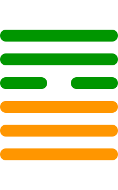

第九卦
小畜卦

卦辞
亨。密云不雨，尚往也。
小畜卦象征着小的积蓄，力量有限。卦辞意为：亨通。密云不雨，还要前往。小畜卦告诉我们，虽然力量不足，但仍有发展的可能，需要继续努力前进。
彖传
小畜，柔得位而上下应之，曰小畜。健而巽，刚中而志行，乃亨。密云不雨，尚往也。健而巽，刚中而志行，乃亨。
彖传说：小畜，柔顺得位而上下相应，叫小畜。刚健而谦逊，刚健居中而志向得以实行，于是亨通。密云不雨，还要前往。刚健而谦逊，刚健居中而志向得以实行，于是亨通。
象传
风行天上，小畜。君子以懿文德。
象传说：风行天上，就是小畜卦。君子应当效法这种精神，修养文采德行。风吹拂天空，象征着积累德行，君子要注重内在修养。
爻辞
初九：复自道，何其咎，吉
回到自己的道路上，有什么灾害呢，吉祥。
初九爻位于最下方，象征开始积累。回到正确的道路上，坚持自己的原则，不会有灾害，反而吉祥。
九二：牵复，吉
牵引回复，吉祥。
九二爻得中得正，能够引导他人。在积累过程中，能够帮助他人回归正道，这样是吉祥的。
九三：舆说辐，夫妻反目
车轮脱落辐条，夫妻反目成仇。
九三爻位置不当，象征关系破裂。如同车轮脱落辐条无法前进，夫妻关系恶化，需要谨慎处理人际关系。
六四：有孚，血去惕出，无咎
有诚信，流血离去，警惕消除，没有灾害。
六四爻接近君位，虽然柔弱但有诚信。经过危险后，流血的痛苦已经过去，警惕心理消除，没有灾害。
九五：有孚挛如，富以其邻
有诚信像系在一起一样，富裕连同邻居。
九五爻居中尊位，有很强的凝聚力。诚信如同绳子一样系在一起，能够带动周围的人共同富裕。
上九：既雨既处，尚德载，妇贞厉，月几望，君子征凶
已经下雨已经停止，崇尚德行承载，妇人坚守正道有危险，月亮接近满月，君子出征凶险。
上九爻位于极点，事物发展到顶点。雨水已经降下，事物停止发展。此时要崇尚德行，但妇女和君子都要警惕危险。